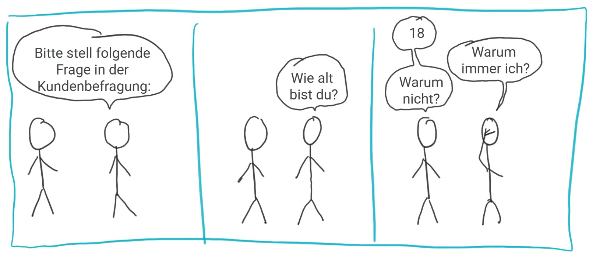

Einführung in Python-Funktionen¶
Video
In Python ist eine Funktion eine selbstständige, wiederverwendbare Codeeinheit, die dazu dient, eine bestimmte Aufgabe zu erledigen. Funktionen können Parameter akzeptieren, Operationen durchführen und einen können Rückgabewert liefern.
graph LR;
A([Parameter]) --> B[Funktion] --> C([Rückgabewert])Bereits in unseren bisherigen Python-Lektionen haben wir verschiedene eingebaute Funktionen verwendet, die verdeutlichen, wie nützlich und vielseitig Funktionen in Python sind. Auch in der Startphase haben wir bereits unsere eigenen Funktionen geschrieben.
Ein klassisches Beispiel ist die print()-Funktion, die wir häufig verwendet haben, um Werte auf dem Bildschirm
auszugeben.
Eine weitere bisher häufig genutzte Funktion ist input(), die es uns ermöglicht, Benutzereingaben zu erfassen. Diese
Eingaben können dann für eine Vielzahl von Zwecken innerhalb des Programms verwendet werden.
Schließlich haben wir auch die random-Bibliothek und ihre Funktionen wie random.randint() verwendet, um
Zufallszahlen zu generieren.
Diese Funktionen sind Beispiele dafür, wie eingebaute und modul-spezifische Funktionen in Python die Entwicklung von Programmen vereinfachen und bereichern können, indem sie komplexe Aufgaben hinter einfach zu verstehenden und zu verwendenden Schnittstellen verbergen.
Definition von Funktionen¶
Video
Um eine Funktion zu definieren, starten wir eine Zeile mit dem Schlüsselwort def.
Darauf folgt der Name der Funktion. Darauf eine ( und eine Liste von ,-seperierten Parameternamen und ein
abschließendes ):. All das war der Funktionskopf. Nun wir die nächste Zeile eingerückt.
Alle folgenden, eingerückten Zeilen sind der Funktionsrumpf. Sie werden ausgeführt, wenn die Funktion aufgerufen wird,
sonst nicht.
Schauen wir dazu direkt ein Beispiel an einer Funktion ohne Parameter (d.h. einfach nur () nach dem Funktionsnamen
im Funktionskopf):
1 2 3 4 5 6 7 | |
In den Zeilen 5, 6 und 7 führen wir die Funktion hoch() aus, die in Zeile 1 bis 3 definiert ist.
Die Ausführung erfolgt, indem wir den Funktionsnamen aufschreiben und dahinter () schreiben.
Wir sehen dann, wie der Zeiger, von Zeile 5 zu Zeile 1 springt, dann die Zeilen 2 und 3 ausführt und dann bei Zeile 6 weitermacht, wo es zuletzt aufgehört hatte.
Im Funktionskörper können alle Dinge, die wir aus Python kennen ganz normal verwendet werden. Der Code im Funktionsblock unterscheidet sich nicht von anderem Python-Code.
Funktionen mit Parametern¶
Video
Über Parameter können wir dafür sorgen, dass Funktionen nicht immer exakt das Gleiche tun, sondern, eben abhängig von den übergebenen Parametern, in ihren Ergebnissen variieren, obwohl die Rechenvorschriften gleich sind.
Im Bild gesprochen: Ein Rezept besteht einerseits aus einer Liste von Zubereitungsschritten (Funktionskörper) aber auch aus einer Auflistung der Zutaten (Parameter). Nun kann man zwei verschiedene Kuchen mit demselben Rezept backen, indem man die Zutaten variiert. So macht es z.B. einen Unterschied welche konkrete Apfelsorte man in einem Apfelkuchen verwendet.
Definieren wir Parameter in einer Funktion, so müssen wir diese beim Funktionsaufruf mit Klammern angeben:
1 2 3 4 5 6 7 8 | |
graph LR;
P1(["age"]) --> F[print_greeting]
P2(["name"]) --> FRückgabewerte¶
Video
Nun ist noch wichtig zu erwähnen, dass Funktionen nicht nur verarbeiten, sondern auch ein
Ergebnis am Ende ihrer Durchführung zurückgeben können. Der Wert der zurückgegeben werden soll steht in einer
Zeile mit einem vorangehenden return.
1 2 3 4 5 6 7 8 9 10 11 12 13 14 15 16 17 | |
graph LR;
P1(["price"]) --> F[print_greeting]
P2(["weekday"]) --> F
P3(["age"]) --> F
F --return--> R(["actual_price"])⚠ Sobald eine return Zeile durchgeführt wird endet auch sofort die
Durchführung des Codes, egal, was sonst noch im Funktionsrumpf folgt.
1 2 3 4 5 6 7 | |
Mehrere Rückgabewerte¶
Video
In Python ist es auch möglich mehrere Objekte auf ein Mal zurück zu geben.
Die Syntax dafür ist sehr einfach, man schreibt nach dem return
die Rückgaben mit einem , getrennt nacheinander auf. Hier ein Beispiel
einer Funktion, die das erste und letze Element einer Liste zurückgibt.
1 2 3 4 5 6 7 8 9 | |
Eigentlich gibt die Funktion ein Tupel zurück, aber wir nutzen das automatische Entpacken, um die Elemente direkt in Variablen zu speichern.
Bedeutung und Zweck von Funktionen¶
-
Modularität: Funktionen ermöglichen es, den Code in kleinere, wiederverwendbare Teile zu unterteilen. Das macht den Code übersichtlicher und wartbarer.
-
Wiederverwendbarkeit: Einmal definierte Funktionen können in verschiedenen Teilen eines Programms oder sogar in verschiedenen Programmen wiederverwendet werden.
-
Abstraktion: Durch Funktionen kann man komplexe Abläufe hinter einer einfachen Schnittstelle verbergen. Nutzer der Funktion müssen nicht wissen, wie die Funktion intern arbeitet.
-
Testbarkeit: Funktionen ermöglichen es, kleine Teile des Codes isoliert zu testen.
Aufgaben¶
🌶 Einfache Begrüßungsfunktion
Schreibe eine Funktion begruesse(), die "Hallo Welt!" ausgibt.
Lösung
1 2 3 | |
🌶 Quadratzahlen
Schreibe eine Funktion quadrat(), die das Quadrat einer übergebenen Zahl zurückgibt.
Lösung
1 2 3 | |
🌶 Maximum von zwei Zahlen
Schreibe eine Funktion max_zwei(), die zwei Zahlen als Argumente nimmt und die größere
Zahl zurückgibt.
Lösung
1 2 3 4 5 | |
🌶 Summierung
Schreibe eine Funktion summiere(), die die Summe von drei übergebenen Zahlen berechnet und
zurückgibt.
Lösung
1 2 3 | |
🌶 String-Wiederholung
Schreibe eine Funktion wiederhole_string(str, n), die einen String str und eine Zahl n
nimmt und den String n-mal wiederholt.
Lösung
1 2 3 | |
🌶 Fahrenheit in Celsius
Schreibe eine Funktion fahrenheit_in_celsius(), die eine Temperatur in Fahrenheit nimmt
und in Celsius umrechnet. Die Formel dazu ist c = (f - 32) * 5 / 9.
Lösung
1 2 3 | |
🌶🌶 Listenelemente addieren
Schreibe eine Funktion addiere_positive_liste(), die eine Liste von Zahlen
nimmt und alle positiven Zahlen in der Liste addiert.
Lösung
1 2 3 4 5 6 7 8 9 | |
🌶🌶🌶 Listenelemente addieren und prüfen
Schreibe eine Funktion addiere_negative_liste(), die eine Liste von Zahlen
nimmt und alle negativen Zahlen in der Liste addiert. Dabei soll zusätzlich
geprüft werden, ob es sich bei dem Eintrag überhaupt um eine Zahl handelt.
Lösung
1 2 3 4 5 6 7 8 9 | |
🌶 Check Gerade Zahl
Schreibe eine Funktion ist_gerade(), die prüft, ob eine übergebene Zahl gerade ist.
Lösung
1 2 3 | |
🌶 Countdown
Schreibe eine Funktion countdown(), die eine Zahl nimmt und einen Countdown von dieser Zahl bis 0
ausgibt.
Lösung
1 2 3 4 | |
🌶 Minimum in Liste finden
Schreibe eine Funktion finde_minimum(), die eine Liste von Zahlen nimmt und das
kleinste Element zurückgibt. Nutze dabei keine bestehende Funktion in Python,
sondern implementiere dies über eine Schleife.
Lösung
1 2 3 4 5 6 7 8 | |
🌶 Länge eines Strings
Schreibe eine Funktion laenge_string(), die die Länge eines übergebenen Strings
zurückgibt. Nutze dabei keine bestehende Funktion in Python,
sondern implementiere dies über eine Schleife.
Lösung
1 2 3 4 5 6 7 | |
🌶 Multiplikationstabelle
Schreibe eine Funktion multiplikationstabelle(), die eine Zahl nimmt und ihre
Multiplikationstabelle bis 10 ausgibt.
Lösung
1 2 3 4 | |
🌶🌶 Palindrome prüfen
Schreibe eine Funktion ist_palindrom(), die einen String nimmt und prüft, ob es ein
Palindrom ist.
Lösung
1 2 3 4 | |
🌶🌶 Mehrere Rückgabewerte
Schreibe eine Funktion, die aus einem Text das längste und das kürzeste Wort findet und diese zurückgibt. Wenn es mehrere Wörter gleicher länge gibt, soll das Erste verwendet werden.
Lösung
1 2 3 4 5 6 7 8 9 10 11 12 13 14 15 | |
Argumente vs Parameter - Was ist der Unterschied?¶
In der Programmierung ist es wortvoll, die Unterschiede zwischen Parametern und Argumenten zu verstehen, da sie oft fälschlicherweise synonym verwendet werden, obwohl sie unterschiedliche Konzepte darstellen.
Parameter¶
- Definition: Parameter sind die Variablen, die in der Definition einer Funktion aufgeführt werden. Sie agieren wie Platzhalter für die Werte, die die Funktion beim Aufruf erhält.
- Beispiel: In der Funktionsdefinition
def addiere(a, b):, sindaundbdie Parameter. Sie definieren, welche Art von Werten die Funktion erwartet.
Argumente¶
- Definition: Argumente sind die tatsächlichen Werte, die beim Aufruf einer Funktion an diese übergeben werden. Sie ersetzen die Parameter, wenn die Funktion ausgeführt wird.
- Beispiel: Beim Aufruf
addiere(3, 5), sind3und5die Argumente. Sie sind die konkreten Werte, die füraundbeingesetzt werden.
Analogie: Man kann sich Parameter als die "Beschreibung" eines Produkts und Argumente als das "tatsächliche Produkt" vorstellen.
Default Parametern¶
Video
In Python ist es möglich einen Parameter schon bei der Funktionsdefinition
zu belegen. Wenn dieser Parameter dann beim Aufruf nicht explizit gesetzt
wird, dann wird der vorher festgelegte default-Wert als Argument genutzt. Im folgenden
Beispiel sehen wird, dass der Parameter formal per default auf False
gesetzt ist.
1 2 3 4 5 6 7 8 9 10 | |
Sobald ein Parameter eine Defaultbelegung hat, müssen auch die darauf
folgenden Parameter eine Defaultbelegung aufweisen. Der Funktionskopf
def begruessung(formal=False, name) würde also zu einem Fehler führen.
Callstack¶
Video
Es ist möglich Funktionen in Funktionen auszuführen. Dabei entsteht ein sog. Stack von Funktionsaufrufen.
Im folgenden Code, siehst du, wie Funktionen in Funktionen ausgeführt werden.
1 2 3 4 5 6 7 8 9 10 11 12 13 14 15 16 17 18 19 20 21 22 23 | |
🌶🌶 Stack in Exceptions
Nico hat sich ein Pythonprogramm geschrieben, um seine monatlichen Kosten für SMSs zu berechnen. Dieses führt jedoch zu einem Fehler, wenn man es ausführt.
1 2 3 4 5 6 7 8 9 10 11 12 13 14 15 16 17 18 19 20 21 22 23 24 25 26 27 28 29 30 31 32 33 34 35 | |
Auf der Konsole erscheint folgender Fehler:
1 2 3 4 5 6 7 8 9 10 11 | |
- Welcher Fehler ist passiert?
- In welcher Methode ist der Fehler passiert?
- In welcher Methode wurde diese Methode aufgerufen?
- Wo wurde diese zweite Methode wiederum aufgerufen?
Aufgabe: Callstack im Debugger🌶¶
Kopiere den obigen Code in eine IDE deiner Wahl. Setze einen Breakpoint in Zeile 18. Starte den Debugger.
Wo findest du den Callstack der Aufgerufenen Funktonen? Was siehst du, wenn du durch diesen klickst?
Aufgabe: SMS-Calculator reparieren🌶🌶¶
Repariere das obige Programm von Nico.
Funktionen als First Class Citizens¶
Video
Funktionen sind in Python selbst auch Objekte. Das heißt sie können als Argumente übergeben werden.
Als beispiel sei im Folgenden eine Funktion definiert, die mit jeweils zwei Listenelementen eine Operation durchführt und die Ergebnisse in einer neuen Liste speichert (wir gehen mal davon aus, dass die Liste immer eine gerade Anzahl von Elementen enthält). Welche Operation das ist, wird auch über eine Parameter festgelegt.
1 2 3 4 5 6 7 8 9 10 11 12 13 14 | |
Beachte, dass hier in Zeile 13 nur der Funktionsname add als Argument übergeben wird, die runden Klammern fehlen
(nicht add())! Denn wenn wir hinter einem Funktionsnamen Klammern schreiben, sagen wir damit, dass die Funktion
auch ausgeführt wird. Ohne Klammern meinen wir die Funktion als Objekt und können sie hier übergeben.
Man kann sich das so vorstellen: Eine Frage kann etwas sein, dass gestellt wird, um eine Antwort auf diese Frage zu bekommen, oder ich kann die Frage auch jemanden mitgeben, dass er diese Frage zu einem späteren Zeitpunkt stellt. In dem einen Fall, soll die Frage sofort beantwortet (ausgeführt) werden, im anderen Fall geben wir die Frage mit und das Fragen stellen (die Ausführung) kommt später.

Aufgabe: Multiplizieren statt addieren🌶¶
Füge beim obigen Code eine Funktion multiply(a,b) hinzu, die die beiden Parameter a und b miteinander
multipliziert. Die folgenden Outputs sollen dann erscheinen:
1 | |
Aufgabe: Filtern🌶🌶🌶¶
Definiere eine Funktion smaller_than_5(n), die prüft, ob der Parameter n kleiner als 5 ist. Wenn ja, soll
True zurückgegeben werden, andernfalls False.
Definiere eine Funktion namens my_filter(my_list, predicate), die eine Liste my_list und eine Methode
predicate erwartet. Der Methode predicate liefert Boolean zurück (also True oder False) und soll
ein Kriterium sein, nach dem Elemente aus der Liste herausgefiltert werden. Beispiel für dei Ausgabe:
1 2 | |
Lösung
- Welcher Fehler ist passiert?
ZeroDivisionError, weil durch0geteilt wurde. - In welcher Methode ist der Fehler passiert?
calc_average_price - In welcher Methode wurde diese Methode aufgerufen?
calculate_average_cost_per_month - Wo wurde diese zweite Methode wiederum aufgerufen? Zeile 36
Man kann also den Stack von unten nach oben einfach lesen.
Parameterübergabe¶
Video
Jetzt wird es noch einmal wirklich wichtig. Es geht darum, was eigentlich an die Funktionen genau übergeben wird, wenn wir die Argumente festlegen.
Schau dir dazu den folgenden Code an und sage voraus, was der Output sein wird:
1 2 3 4 5 6 7 8 9 10 11 12 13 14 15 16 17 | |
Hast du richtig geraten? Die Variable my_number blieb unverändert, der erste Eintrag
aus my_list jedoch nicht. Woran liegt das?
In der Variablen my_number ist ein primitiver Datentyp (int). Der Wert in my_number
wird in den Parameter number kopiert. Wenn dieser nun manipuliert ist,
kriegt der Wert in my_number das gar nicht mit.
In der Variablen my_list dagegen ist ein kkomplexer Datentyp (list).
In der Variablen my_list ist, um genau zu sein, eine Referenz (die Adresse im Speicher) zu einer Liste gespeichert,
und nicht die ganze Liste. Beim Methodenaufruf change_value wird nun diese Referenz kopiert.
Sowohl die globale Variable my_list als auch der lokale Parameter sequenz beziehen sich nun
auf dasselbe komplexe Objekt. Und wenn einer von beiden dieses Objekt ändern, kriegen das also beide mit.
Und wie weiß ich, welches Objekt ich referenziere? Mit der Funktion id können wir uns
die ID eines Objektes herausgeben. Die selbe ID heißt, das selbe Objekt liegt vor.
1 2 3 4 5 6 7 | |
🌶🌶 Dictionary verändern
Schreibe eine Funktion, die ein Dictionary als Parameter erwartet und diesem ein neues Schlüssel Value Pärchen hinzufügt.
Lösung
1 2 3 4 5 6 7 | |
🌶🌶🌶 Kopie ausgeben
Schreibe eine Funktion, die ein Dictionary als Parameter erwartet und eine Kopie des Dictionaries zurückgibt, das einen neuen Schlüssel besitzt. Das Argument soll also unverändert bleiben.
Lösung
1 2 3 4 5 6 7 8 9 10 11 | |